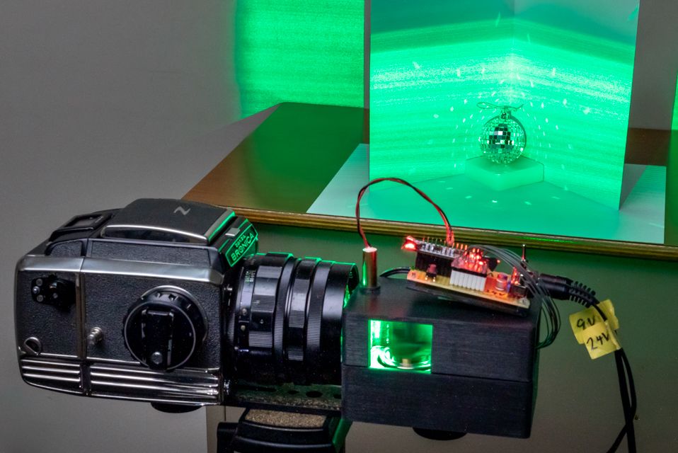
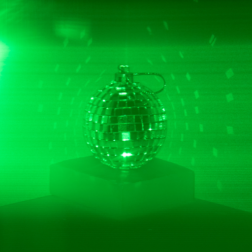
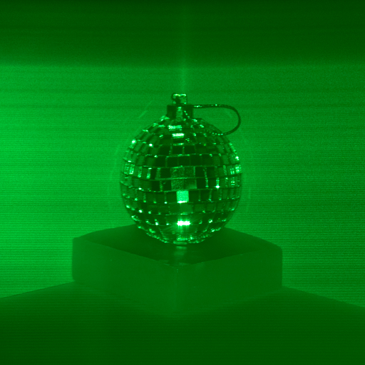
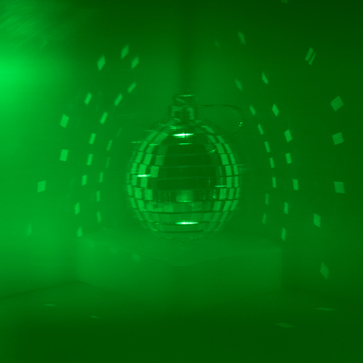

EpiScope: Optical Separation of Reflected Components by Rotation of Polygonal Mirror
Ryota Maeda1,
Shisaku Hiura1
1 University of Hyogo, Japan





Abstract
Separating reflection components is an important task in computer graphics and vision. Episcan3D has been proposed to separate the direct and indirect reflection components in real-time. This method uses a scanning laser projector and a rolling shutter camera, so it requires unmanageably precise geometric alignment and temporal synchronization. In this paper, we propose a novel optical system that achieves the same function without imaging devices. In this method, the ray directions of projection, observation, and presen- tation are optically and mechanically synchronized by a rotating polygonal mirror. The direct or indirect components can be selected by a mask-based light-field filter. Especially, the selected reflection components can be seen directly by our naked eye, and there are no restrictions on image quality or delays in presentation due to the number of pixels or frame rate of the imaging system.Results
Real Time Reflectance Components Separation
EpiScope can select the specific reflectance in real time. We can observe the selected reflection components directly without using the camera or display. The following movies are captured by a video camera through EpiScope.High-Speed Imaging for Dynamic Scene
Since each ray is optically synchronized, there is no synchronization error. We can increase the scanning speed by just increasing the rotation speed of the polygon mirror. Our prototype can scan up to 240 fps.Demo
We presented a demo at CVPR 2023 and MIRU 2022. Thank you for visiting our demo booth!CVPR 2023
MIRU 2022 (domestic conference in Japan)
Citation
Ryota Maeda and Shinsaku Hiura, EpiScope: Optical Separation of Reflected Components by Rotation of Polygonal Mirror, Proc. SIGGRAPH Asia 2021, Dec. 2021.
@incollection{maeda2021episcope,
title={Episcope: Optical separation of reflected components by rotation of polygonal mirror},
author={Maeda, Ryota and Hiura, Shinsaku},
booktitle={SIGGRAPH Asia 2021 Technical Communications},
pages={1--4},
year={2021}
}